一句话规划 核心思路
以「霞浦进、太姥山出」的开口程为骨架，一趟不回头。杭州南下的动车沿海岸线依次停靠 福鼎 → 太姥山 → 霞浦 → 宁德：坐到宁德站 = 多坐 59 公里再折返北上，所以去程直接买到霞浦站，回程从太姥山/福鼎站走。Day 1 霞浦县城吃海鲜、小皓东壁拍滩涂日落，住东壁/三沙；Day 2 花竹日出 + 杨家溪古榕 + 县城午饭，傍晚 14 分钟动车搬到太姥山镇；Day 3 太姥山赶早进园，下午福鼎市区小吃街收尾，傍晚回杭。
📍 为什么是 10/1–10/3（周四–周六）？2026 年国庆 10/1–10/7 放假 7 天。2025 年国庆霞浦游客峰值出现在 10 月 4 日（15.8 万人次）——我们 10/3 傍晚离开霞浦，正好错过峰值日；回程 10/3 也避开 10/6–7 的返程最高峰。且东海伏季休渔 9 月 16 日结束，国庆正是开渔后海鲜最肥的窗口。
| 日期 | 主题 | 主线 | 体力 |
|---|---|---|---|
| 10/01 周四 | 抵达 + 三沙热身 | D3123 杭州东 07:20 → 霞浦 11:21 → 太康路午饭 → 光影 1 号专线 → 小皓滩涂 → 东壁日落 17:46 → 三沙晚饭，住东壁/三沙 | ★★★☆ |
| 10/02 周五 | 日出 + 转场（最重） | 花竹日出 05:52 → 三沙金沙街早饭 → 杨家溪古榕 → 县城午饭 → 下午东海 1 号线（或北岐）→ D3124 霞浦 18:37 → 太姥山 18:51，住太姥山镇 | ★★★★★ |
| 10/03 周六 | 太姥山 + 返程 | 07:00 进太姥山（行李寄存集散中心）→ 12:30 下山 → 福鼎肉片午饭 → 桐山溪西小吃街 + 买白茶 → 福鼎站 17:34/17:45 → 杭州 | ★★★★☆ |
🌗 季节期望值管理（逐条管理，免得到了才失望）：
① 潮汐：10/1–10/3 是农历八月廿一至廿三，已过大潮（八月十五=9/25），滩涂纹理和火烧云规模可能不如初一、十五前后；前一晚务必用「潮汐表」类 App 查北岐/下尾岛低潮时刻（下尾岛只在退潮前后约 2 小时值得上岛）。
② 杨家溪没有红叶：赏枫季在 12 月，国庆去是看千年古榕群，别为「红枫」专程。
③ 台风尾巴：2026 年 7–9 月白水洋·鸳鸯溪因台风多次闭园（7/9、8/8、8/23、9/1 四起公告），10 月初仍是台风季尾端，出发前三天开始盯景区公告。
④ 天亮/日落：霞浦 10/1 日出 05:52、日落 17:46、天黑 18:10（第三方工具站口径，建议 App 复核）。
⑤ 人多价高：2025 年国庆 8 天霞浦接待 98.6 万人次、宁德民宿平均入住率 90.55%；霞浦官方对房价有指导价（酒店 ≤ 上年均价 +100%、民宿 ≤ +50%），超了可以投诉（见避坑清单）。
住宿与周边 两晚两个落脚点
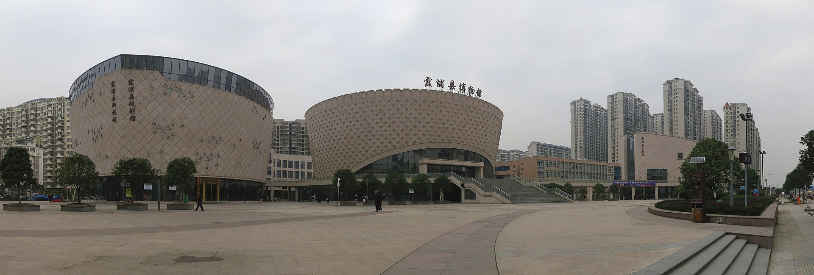
住村里还是住县城，是这趟最重要的住宿决策：住东壁/三沙，花竹日出只需开车约 15 分钟（可 04:40 起）；住霞浦县城，拍北岐日出也得 04:30 前出发，拍花竹要再早 40 分钟。民宿早餐普遍 07:00 才开始，赶不上日出（解决法见 Day 2 早饭）。
🚇 到了之后怎么走
· 霞浦站：在赤岸村、距县城约 4 公里；公交 7/8 路 1–2 元进城；光影 1 号专线（站前，8:00–18:30）直达小皓/光影栈道/东壁/三沙古镇码头，19 座 15 元、7 座 18 元；站前另有深粉色「三沙火车站快线」15 元/人。打车到东壁约 80 元、拼车 4 人约 20 元/人（UGC 口径）。
· 太姥山站：出站巴士到景区集散中心约 6 元/20 分（2024 口径），人多直接打车约 30 元/10 来分钟（UGC）。
· 宁德站：本行程只在你想去屏南白水洋/周宁鲤鱼溪/霍童时才用得上——那是衢宁铁路的起点（见「多一天」）。
🍽️ Day 1 吃什么 · 按餐次排 （抵达日 · 县城 + 三沙） 点任意一家店 → 好评 / 差评 + 招牌 + 人均
🧭 今天的节奏：车上早饭 → 太康路午饭（11:45 错峰）→ 三沙晚饭。⚠️ 太康路 17:30–20:30 最堵且全线禁停，所以海鲜大餐放中午；晚上人在东壁拍日落，拍完就近在三沙吃，不回县城。
07:20 发车前在杭州东站解决，或自带。车上 4 小时，备点水和零食——正餐留到霞浦。
这时候你刚下火车、人在县城。午市 10:00–11:00 开档即去最不挤；这条街官方做过电子秤专项检查，仍建议当面看秤、先问价。
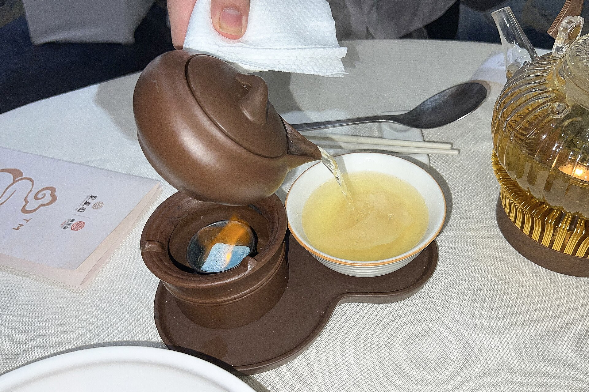
★★★★★携程 5.0 · 23 条本地人吃© N509FZ · CC BY-SA 4.0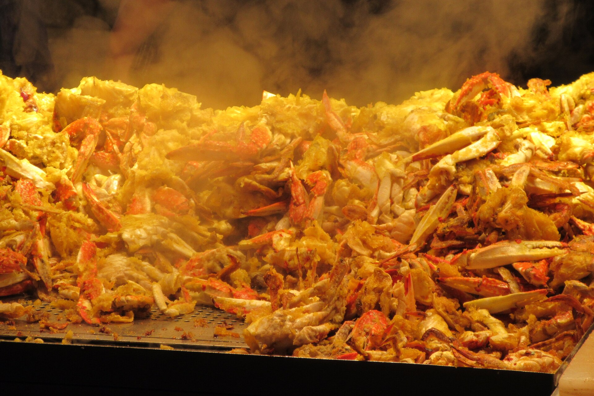
★★★★☆携程 4.0 · 39 条网红店© YEUalichangpsia · CC BY-SA 4.0 ★★★★☆携程 4.5夜宵也开© YEUalichangpsia · CC BY-SA 4.0
★★★★☆携程 4.5夜宵也开© YEUalichangpsia · CC BY-SA 4.0滩涂边没有正经餐饮店，水和小零食在县城买好带上。东壁村有民宿咖啡厅（如悦萃咖啡，携程 4.3 · 6 条 · ¥47），等日落时可以坐。
拍完日落（天黑 18:10）走/坐车回三沙镇区。镇区排档比东壁村便宜一截；想吃活的先问价再下单。
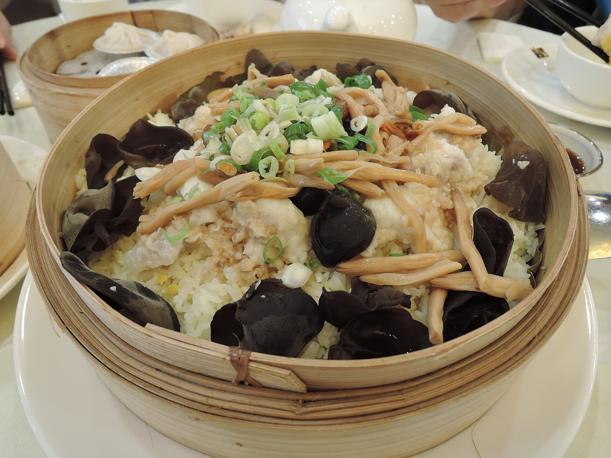
★★★★☆携程 4.5 · 5 条明码标价© Apeach316 · CC BY-SA 2.0三沙海蛎煎（UGC：菜市场旁路边摊，约 18:00–次日 02:00，单源未核实）。猪油煎海蛎+鸡蛋面糊，配一碗闽南糊就是三沙的夜晚。早睡，明天 04:40 出发。
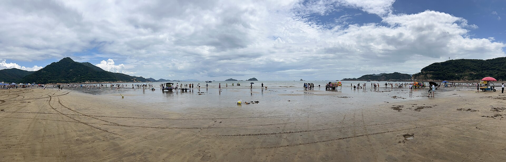
🍽️ Day 2 吃什么 · 按餐次排 （日出日 · 三沙 + 县城 + 太姥山镇）
🧭 今天的关键词是「赶日出怎么吃」：民宿早餐 07:00 才开餐，拍完日出回来正好；要更早吃，只有凌晨开工的糊汤包店。⚠️ 县城 07:30–09:30 是早高峰（太康路/府前路/六一七路全堵），早饭别安排在这个窗口进县城。
三沙是闽南糊的家乡（《早餐中国》拍过）：地瓜粉勾芡的浓汤+虾仁海蛎鱿鱼。金沙街是镇上的早餐街（UGC）。民宿早餐 07:00 才开餐，拍完日出回来正好赶上；想在县城吃凌晨就开的店，看 林明发糊汤包店。⚠️ 07:30 后是县城早高峰。
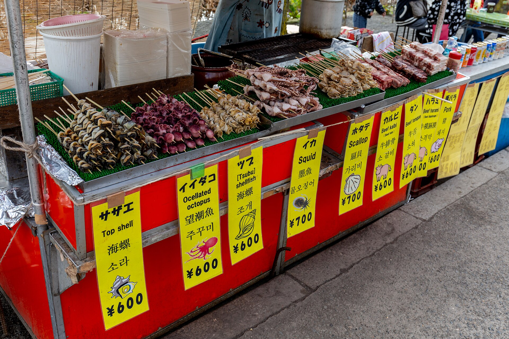
★★★★☆携程 4.2 · 19 条本地© Balon Greyjoy · CC0从杨家溪回县城正好饭点。想换口味吃芋头饭（福鼎槟榔芋是名产），想省钱吃肉片，想再吃海鲜去太康路（午市不堵）。
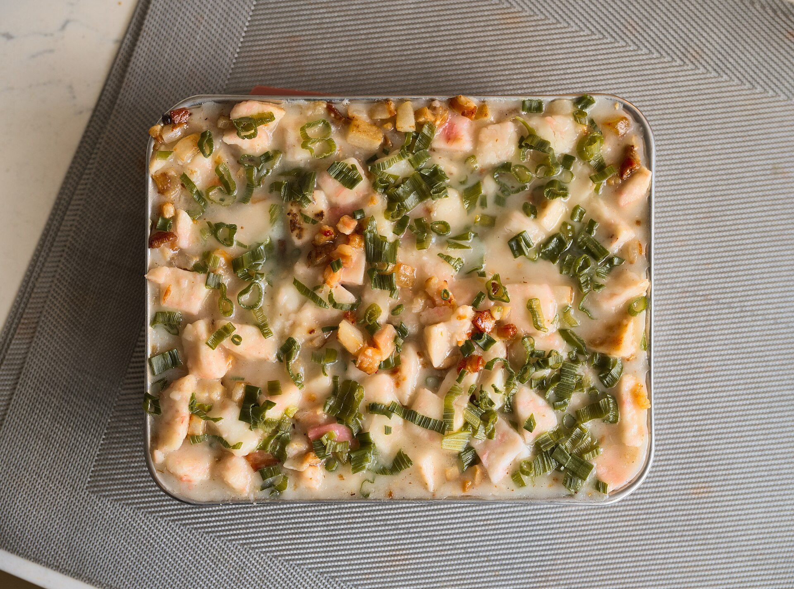
★★★★☆携程 4.1 · 7 条本地© Dllu · CC BY-SA 4.0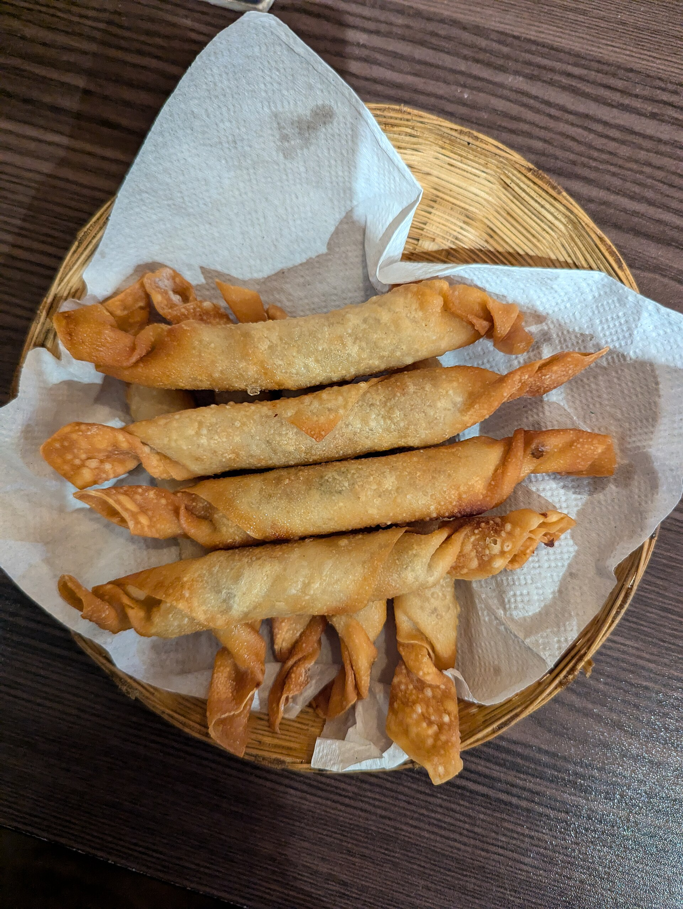
★★★☆☆携程 4.2 · 6 条快© Rocky Masum · CC BY-SA 4.0高罗/大京沙滩边有民宿餐厅和烧烤摊，价格高于县城（东壁/高罗一带餐厅携程人均 ¥94–130）；建议县城买好水饮再上车。
18:51 到太姥山站，打车/班车进镇。福鼎肉片在本地吃和霞浦分店吃是两种体验，镇上一碗约 15 元（UGC）；想吃扎实的就去「阿耐」吃酸辣口卤猪头肉。吃完顺路买明天上山的水——山上 10 元/瓶。
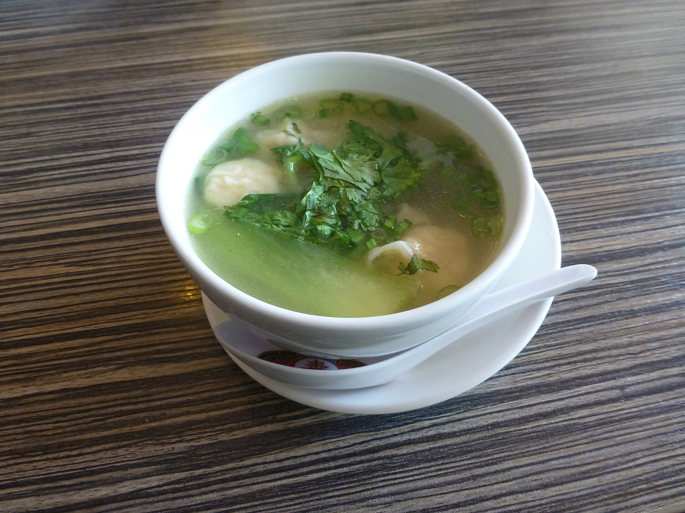
★★★★☆官方名小吃必吃© Grueslayer · CC BY-SA 4.0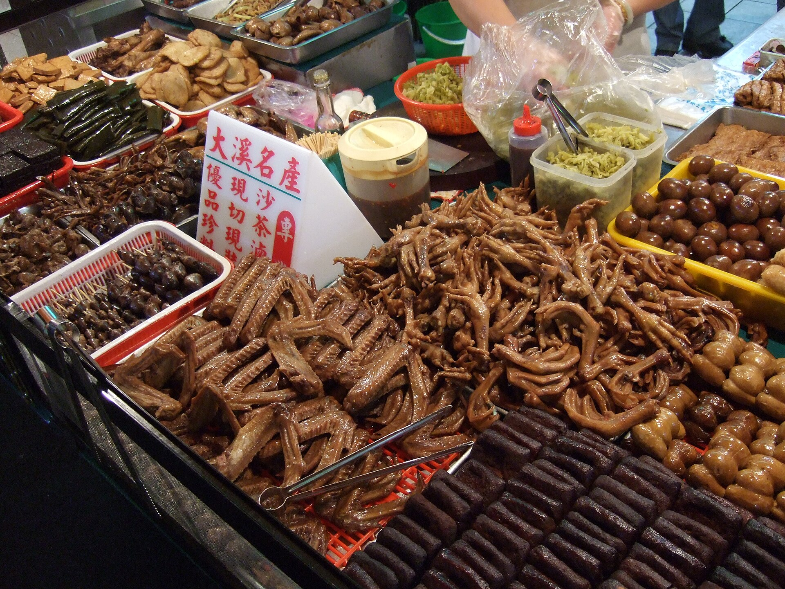
★★★★☆UGC 强推非遗© Yun Huang Yong · CC BY 2.0🍽️ Day 3 吃什么 · 按餐次排 （太姥山镇 + 福鼎市区）
🧭 今天是「福鼎小吃日」：福鼎肉片、小笼包、蜜汁鸡翅、牛肉丸、挂霜芋——全是小份小吃，适合一路走一路吃。福鼎三条官方美食街里，桐山溪西最适合下午逛；石湖海鲜一条街国庆 16:00–19:00 会堵（交警口径），想吃海鲜晚饭又要赶 17:34 的车，时间冲突，这趟放弃。
上山前吃饱。邱记的小笼珍珠包、百年肉燕是官方盖章的「十大名小吃」代表；隔壁 122m 的李记扁食 UGC 称「皮非常薄」。
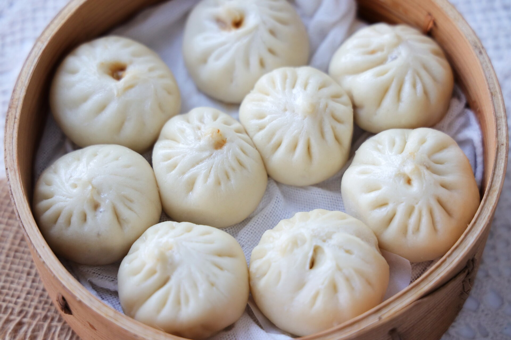
★★★★☆携程 5 条 · ¥27官方名小吃© Darrylsnow · CC BY-SA 4.0阿古牛肉丸是官方「十大名小吃」牛肉丸代表企业之一（彭记阿古），挂霜芋是槟榔芋做的甜品。想快就吃鼎培/阿山肉片（¥16 一碗）。
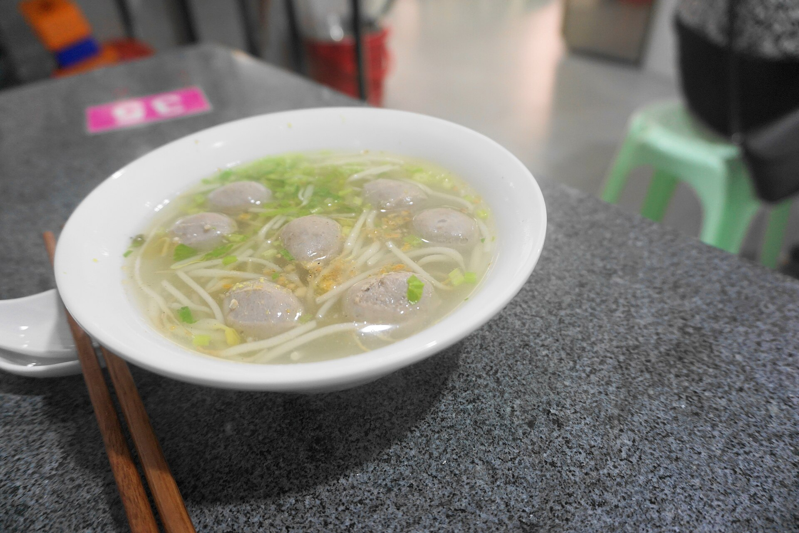
★★★★☆携程 14 条 · ¥53官方名小吃© DragonSamYU · CC BY-SA 4.0蜜汁鸡翅是福鼎「十大名小吃」之一（官方代表企业：鼎韵食膳、鼎享翅），溪西街上边走边吃；配一碗点头米粉汤或畲家乌米饭。褚翅（¥47，携程 3.0·3 条）号称「人气老店」但评分垫底，别专程。
白茶四品类（白毫银针/白牡丹/贡眉/寿眉）是品类不是等级；口粮茶买当年新茶最稳，「十年陈老白茶」做旧重灾区，别在路边店赌。
如果多一天 备选扩展 · 都不在 3 天主线里
主线 3 天只装得下「霞浦 + 太姥山」。下面这些点各有硬伤（国庆人多、季节不对、路程太绕），所以不进主线；多一天的话按此优先级挑。
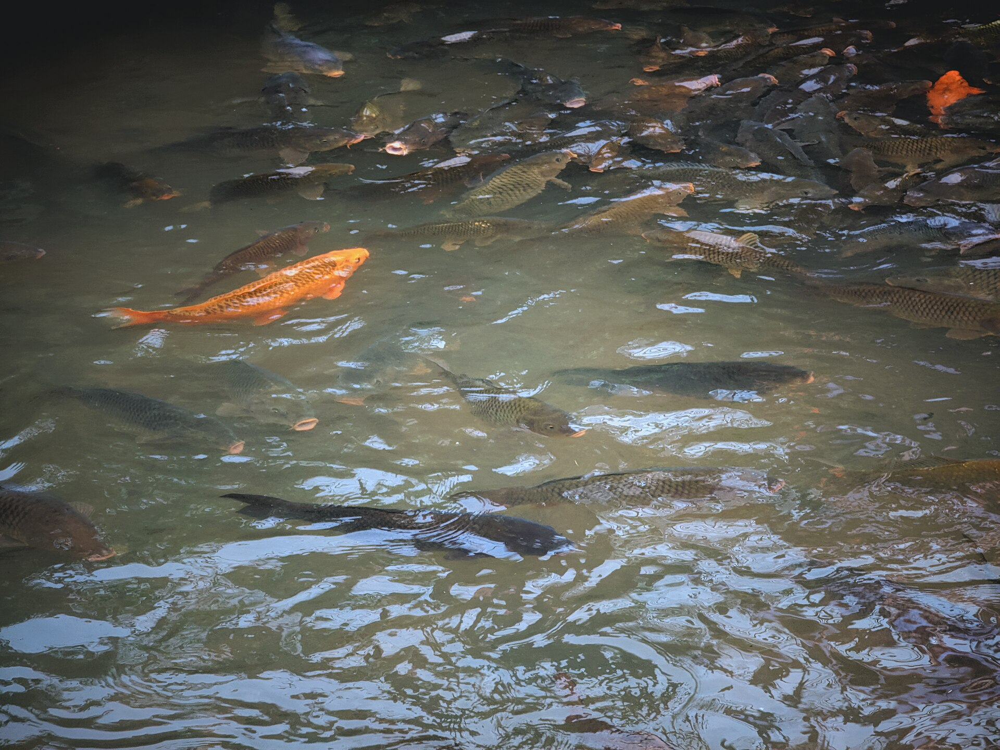
交通票券怎么买 2026-09 已核对价格
价格均为 12306 / 景区官方已公布数字（核对日期：2026-09-15，车次为 2026-09-29 图定口径）。货币单位：人民币（元）。国庆临客与当日票价以 12306 App 查询为准。
💰 全程大交通预算：去程 ¥230 + 霞浦→太姥山 ¥14 + 回程 ¥210 ≈ ¥454/人；市内专线/班车零散约 ¥50–80/人。
评分数据 & 复查后撤下的店 数据怎么念 · 撤下名单
📊 这张表怎么念：评分与「人均」全部来自携程美食 POI（2026-09-15 抓取），5 分制，人均为「用户反馈」口径；大众点评/美团在本环境抓不到，所以只有携程一个平台。宁德餐饮的点评条数普遍只有 1–39 条——5 条样本的 5.0 分不等于「必吃」，只代表「目前没人给差评」。推荐指数 ★ 是综合「评分 × 顺路 × 样本量」的主观打分。UGC（游记/帖）一律标注，不与平台评分混用。
📷 关于封面图：全部来自 Wikimedia Commons 自由授权；宁德这些店大多没有实拍图，封面是同类菜品参考图，以店名、地址与评分为准。
🚫 复查后撤下推荐（附真实评分，别专程去） 2026-09 复查；点开仍可看原始数据
⚠️ 这趟的避坑清单 先看这几条
- 买票别选「宁德站」：杭州南下依次停福鼎→太姥山→霞浦→宁德，坐到宁德 = 多坐 59 公里再折返。去程买霞浦，回程从太姥山/福鼎走。点开看
- 两个抢票时点不一样：去程（杭州各站）9/17 10:45 开售；回程（宁德/霞浦/太姥山/福鼎）9/19 18:00 开售。候补拉满 60 个组合、勾「接受新增临客」。点开看
- 看清经停站再付款：走金温线的车次（D3211/G1605/D3205/G1677 等）从内陆绕，跳过霞浦和太姥山。点开看
- 东壁村晚上禁车（2025 口径）：10/2–10/7 每天 19:00–21:00 机动车禁入；看完日落要么 19 点前出村，要么安心走到三沙吃饭。点开看
- 海鲜六样先问价：椒盐皮皮虾、梭子蟹、椒盐大虾、清煮花螺、大鱿鱼、淡水鳗；剑蛏 130–150 元/斤（官媒口径）下单前确认。点开看
- 买海鲜去农贸市场，别去码头：码头是批发不卖散客（县融媒原话）；公众农贸市场/海滨市场/东关街海鲜市场买了去旁边店加工，高罗实测加工费清蒸/水煮 20 元/盘、爆炒 30 元/盘（县城口径未查到）。点开看
- 民宿毁约取证法：国庆民宿坐地起价有真实判例（霞浦 349 元订单拒单后卖 646，被罚没 2098 元）；被退单时立刻截图「同房型仍在售」，12315 小程序投诉。点开看
- 民宿早餐赶不上日出：普遍 07:00 才开餐；要更早只有凌晨 3 点开工的林明发糊汤包店（县城农贸市场巷内，住三沙则不顺路）。点开看
- 10/1–3 不是大潮：农历八月廿一至廿三，滩涂纹理与火烧云规模可能不如初一十五；下尾岛只在退潮前后约 2 小时值得上，前一晚查潮汐表。点开看
- 太康路全线禁停 + 拥堵时段：早高峰 7:30–9:30、晚 17:30–20:30 最堵；午市 11:00–13:30 最空。自驾别在这条街停车吃饭。点开看
- 太姥山一线天 20–30cm：需侧身收腹，背大包/体型宽的朋友量力而行；节假日 10 点后排队，山上水 10 元/瓶。点开看
- 国庆别临时起意去嵛山岛：2025 国庆前 3 天岛上破 3 万人次、船票一度溢价、民宿全满；三沙去程末班 12:00，半天来回不现实。点开看
- 杨家溪国庆没有红叶：赏枫季在 12 月；「老农牵牛过榕林」是付费摆拍，摆拍人休息就扑空。点开看
- 10 月初仍是台风季尾端：2026 年 7–9 月白水洋·鸳鸯溪因台风 4 次发闭园公告；出发前 3 天开始盯景区公告与高铁停运信息。点开看
- 海上信号选移动：宁德海域 5G 覆盖的移动证据最全（官媒多起报道）；嵛山岛天湖草场 UGC 称信号弱，上岛前把离线地图下好。点开看
- 备一点现金：渔港小摊、三沙突突车、村里小卖部可能只收现金或信号差刷不出码；村里没有银行网点，最近的在三沙镇区。点开看
行前必查清单 出发前 1 周做
✅ 必做七件事：① 9/17 10:45 抢 D3123 去程票（同步挂候补、勾「接受新增临客」）；② 9/19 18:00 抢 10/3 回程票（福鼎 G3022/D2424、太姥山 D3308/G1622 都挂上）；③ 订 D1 东壁/三沙民宿，截图「退订条款 + 同房型在售页」存证；④ 出发前 3 天查台风动态与太姥山/白水洋景区公告；⑤ 装「潮汐表」类 App，前一晚查北岐/下尾岛低潮时刻；⑥ 线上买太姥山套票 ¥138（含观光车），确认 2026 国庆是否需预约入园；⑦ 复核霞浦/福鼎 2026 国庆交通管制通告（本页为 2025 口径）。
📸 图集 · 这趟会看到的画面 实拍参考
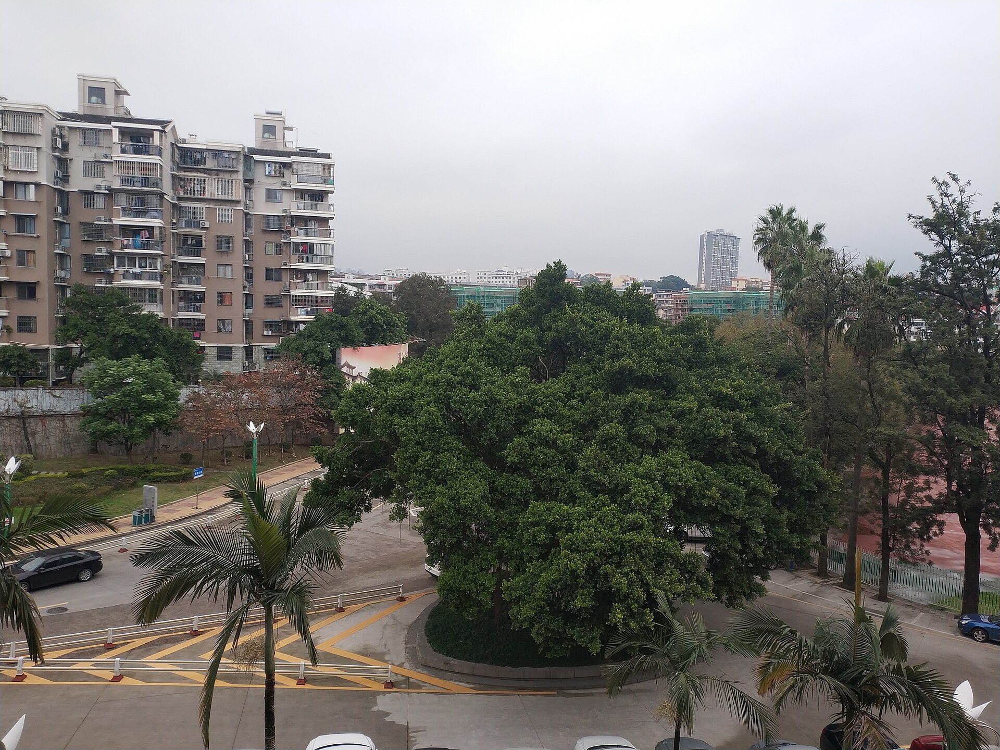
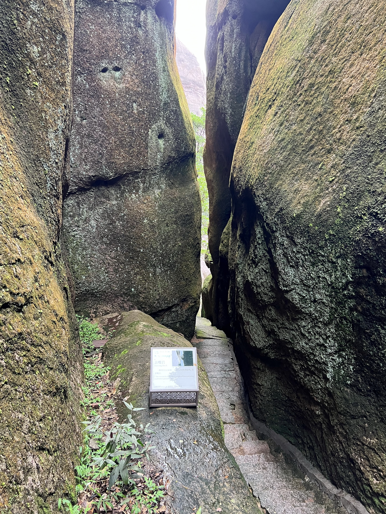
全部图片来自 Wikimedia Commons，采用 CC0 / CC BY / CC BY-SA 授权，作者与授权见每张图说明。
A 级数字均来自政府/运营方官方页面；2026 国庆管制通告发布后需复核